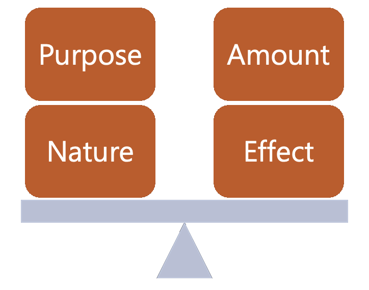

Emulation for Archivists
What is emulation?
The rise and significance of emulation can be attributed to a hobbyist, do-it-yourself community outside of a formalized, professional sphere: video games and their enthusiasts. With enthusiasm comes a need for the access of digital artifacts industry-driven changes in technology have provided little to no options for—a call both archivists and gamers can agree with.
This foundational history brings us to the role of emulation within digital preservation practices. Per traditional dictionary definitions, to emulate means to strive to equal or imitate. An emulator is the means that allows us to do exactly that. The practice of emulation is a tool all archivists should learn more about for digital workflows.
Jon Ippolito, a Professor of New Media at the University of Maine who has spoken extensively on technological obsolescence and the preservation of media art, defines emulation as “a computer program that ‘fools’ the original code into assuming that it is still running on its original equipment, thus enabling software from an out-of-date computer to run on a contemporary one” (116).
Simply stated, the act of emulation can allow archivists to access digital artifacts that are considered obsolete according to today’s technologies. Emulation provides avenues for challenging obsolescence by enabling other means of access.
Example cases

To better understand what emulation can do and what it can be used for, let’s look at the following two examples.
Archivists and cultural heritage institutions have utilized emulation for accessing digital artworks. In 2014, Iontank, a specialized design studio developing interactive art installations and software systems, worked with the Andy Warhol Museum to display digital artwork created in the 1980s on the Commodore Amiga 1000 computer. Iontank created their own Amiga 1000 emulator to make the files, which were stored on a floppy disk, viewable. In addition, the company preserved the "look and feel" of viewing the artworks on the same computer, just as if one were doing so back in the 1980s. Decommissioned Amiga 1000s were used for the display and the internal components of the computer were replaced with new hardware. Read more about their work and view the photos here(opens in a new tab).
More recently, the Born-Digital Preservation Lab at Stanford University Libraries used emulation to access “The Would-Be Gentleman,” a floppy disk simulation created by Stanford history professor Carolyn Lougee in 1985. The simulation was originally used for her History seminar “The France of Louis XIV.” To conduct this work, the Digital Archivist at Stanford University partnered with the Software Preservation Analyst at Emulation-as-a-Service Infrastructure (EaaSI), a group of organizations working together to develop technology and scale of Emulation-as-a-Service software. A main hurdle in their work included uncertainty over which emulator to use. Read more about their work here(opens in a new tab).

What other options do I have besides emulation?
Emulation isn't an elixir for all digital file challenges and this guide doesn't aim to propose it as a one-size-fits-all solution. It all depends on what you're doing and the financial and technical resources available to you. Let's compare it with some other options.
Emulation vs. migration
Migration is the most widely adopted digital preservation strategy in archives, so it's important to compare the two. Migration is the act of moving electronically stored information from one computer application or platform to another. It may also require conversion to another format (Sedona Conference 2014).
Emulation offers extensibility, a systems design principle in software engineering that is defined as a measure of the ability to extend a system and the level of effort required to implement the given function. Computer manufacturers such as Dell and Apple detail specifications similarly as time goes by given the mass production scale of hardware. This quality of hardware makes it easier for creators of emulators to match a broader range of specifications. Long story short, emulators don't often have to be replaced for each operating system version and configuration. Once you've emulated a chip, you're also able to access every other file that runs on the same chip.
On the other end, migration must be reperformed on a case-by-case basis for each artifact on various platforms. Using an Open Archival Information System (OAIS) framework, migration transforms the Information Package (IP) from one software or hardware configuration to another. However, you risk the chance of losing functionality of digital artifacts during the process, as newer technology may not have the same specifications needed to open the file to its original capacity. Each successive translation to new technology can introduce new losses.
To quote Jeff Rothenberg, one of the most notable researchers and advocates of emulation: "Like an illiterate monk dutifully copying text in a lost language, migration may save the bits but lose their meaning."
Emulation can save time and efforts in the long run if you're working with a large amount of digital artifacts that operate on similar specifications as it can mimic the exact environment that the artifacts need to run on. However, emulation often requires specific technical knowledge and a legal framework to be figured out in advance. We'll talk more about intellectual property issues below.Emulation vs. virtualization
Emulation is often discussed alongside virtualization. While the two methods serve similar endgoals, they operate in different ways. Virtualization is "a technique for implementing a virtual machine (VM) on a host computer" with a VM defined as "a computer that has no separate physical existence, but is part of a behavior of a physical computer, which is called the VM's host computer" (Rosenthal 2015). In other words, it makes it possible for the virtual machine to run directly on the given hardware by creating a simulated environment where one operating system can run on top of another.
To better understand virtualization, here's a simple example. It can be possible to emulate and play a video game from the early 2000s on your modern-day computer because it is the software that allows this to happen. Emulation is mimicking the original hardware needed. However, you cannot use virtualization to access the game because your modern-day computer does not have the same central processing unit (CPU) as the original videogame console needed to play the game. Virtualization would require that you have the same hardware. In this case, you would not. Therefore, you'd have to choose emulation over virtualization to access the game.
It can be advantageous to choose virtualization over emulation if you are able to do so. Emulation requires a software bridge to interact with the hardware while virtualization accesses hardware directly. Because of this, it is normally faster and less CPU-intensive than emulation.
Intellectual Property
Before you embark on an emulation project, know there are legal implications involved. Quick word of advice is to always err on the side of caution, especially if you're doing work on behalf of a client or institution. While we can't control everything you choose to do, here are some legal and ethical considerations to keep in mind before you move forward.

Tip: Laws will vary depending on where you are based. This guide will speak from a U.S.-perspective. We are also not trained lawyers, so we suggest you seek appropriate counsel if you are working with a more difficult situation to navigate.
Software copyright
Software and its hardware-specific variant known as firmware must always be assumed to be under copyright. In the U.S., computer programs are considered literary works under Title 17 of the United States Code(opens in a new tab) outlining U.S. copyright law. In addition, the Digital Millennium Copyright Act (DMCA)(opens in a new tab) makes it illegal to bypass any form of copy protection. These forms of protection are often known as Digital Rights Management (DRM) technologies.
Video game developers have been known to go after others developing emulators for game access. In 2017, Atlus, a Japanese video game developer, filed a DMCA takedown against the creators of the open-source Playstation 3 emulator RPCS3(opens in a new tab), notable for running the video game Persona 5. The emulator's Patreon page was advertising access to the game by emulating playability on a PC.
Note that the emulator RPCS3 is still up and running despite the takedown notice, given the existence of the emulator itself is legal. It is the claim of having access to content under copyright, the video game, that takes the situation into murkier waters. ROMs, short for read-only-memory, store data for videogames and cannot be electronically modified per copyright and DRM restrictions. Running the ROM through the emulator can be considered a modification and new means of distribution and access, and thus a potential infringement of copyright law according to DMCA. The two groups eventually settled by having RPCS3 remove all references of the video game from their Patreon page.
This example is only one of many, many of which have lead to varying results between groups. However, while the example is in the video game realm, this illustrates the kinds of legal challenges that can arise in a variety of contexts.
Layered rights
Another legal complication are layered rights. A copyright owner of a work can transfer their rights to you for a project; however, there may be other rights embedded within the work that cannot be transferred over. Some rights may be specific to a certain use or instance.
For example, the creator of the work may have secured their own rights for using another work within their final project. This can be the use of a font, song, photograph, or a moving image clip—all of which are considered works that may have their own copyright protections. The creator may have the right for use; you as another entity using and redistributing the work may not.
Tip: We suggest you have all documentation of copyright agreements available from a donor before beginning an emulation project. Reduce risk and surprises while you can—you don't want to invest significant efforts and then come across copyright hurdles hindering you from making your work accessible!
Agreements may sometimes be lost over time or untraceable. This is where professional ethics and case-by-case judgments can step in. If there is a popular Top 40 song or footage from a film licensed by a large production studio within the work, you may need further documentation and certainty of copyright agreements before you move forward. If you decide to move forward and accept potential risks, note that you and your institution may be issued a DMCA takedown notice by a copyright holder or creator.
Lastly, some works or individuals within the work may also be unwilling to be included within an emulation project and not have copyright laws from a legal framework to protect themselves and their interests. For example, while legal frameworks exist for certain works, working with Indigenous materials are moreso guided by ethical frameworks implemented by practioners in the archival field rather than legal ones.
We hope you'll approach an ethics of care in your work (Caswell 2016). Talk to other archives colleagues and read publications in the field to learn from others' work and experiences. Learn from the individuals and communities you work with and for. These practices can help inform your own ethics as an archival professional.
The fair use test
Access is a defining motive for archival work. With access comes potential risks, specifically the copyright and intellectual property concerns discussed at length in this section.
To decide whether your project or access of a work through the use of emulation constitutes fair use, you can use the "fair use test" as defined by Section 107(opens in a new tab) of the U.S. Copyright Act:
- Purpose: Fair use statutes indicate that nonprofit educational purposes are generally favored over commercial uses. It also states several purposes appropriate for fair use, such as criticism, comment, news reporting, teaching, scholarship, or research.
- Nature: This factor centers on the work being used. Some considerations to take into account include whether the work is copied, unpublished, informational, or entertaining. The unpublished "nature" of a work can weigh against a finding of fair use. A court may reason that copyright owners should have the right to determine circumstances of "first publication."
- Amount: This factor questions how much of the work you are using. A general guideline is the more you use, the less likely it's fair use. There are varying units of measurement for "amount." For example, a thumbnail of an image or a low-resolution version may also be considered a "lesser amount."
- Effect: This factor discusses the potential market of the work or value of the work in question and the impact your use may have on the copyright holder. This factor is also closely linked to "purpose." While you may be making work accessible through emulation, your institution may also financially benefit from the work's display through other means, such as funding or gallery admission sales to view the emulated work.
Note that while your use of emulation for a work may fall under some factors or specific purposes under a given factor, it must pass a balance of all four factors in the fair use test. Depending on the content and the financial circumstances of a corporate entity holding the rights of a given work, courts and individuals may still find a way to penalize you for use regardless. However, know that fair use is a legal principle that can support you.

A fair use argument for emulation
Now let's look at a specific example of fair use cases for emulation. In 2019, Apple sued Corellium, a security firm developing software for analyzing Apple products, specifically an iOS emulator. A judge in the U.S. District Court for Southern Florida issued their ruling in late 2020 claiming Corellium's actions constituted fair use. The judge found that "Corellium was not cloning iOS as a means of competing with Apple, but was genuinely using Apple's work as the basis of creating something new." Read more about it in this Ars Technica article here(opens in a new tab).
The notion of "creating something new" remains foundational when evaluating the use of emulation. It provides grounds for the argument that emulating work for preservation and archival needs can benefit new and greater intellectual understanding within society and provide access to crucial works that may be forgotten within the cultural record. Emulation can also provide access to digital artifacts industry and capital-driven changes have left little to no other options for. However, as we previously discussed, there are always going to be many other factors to consider.

Module 1: Self-Assessment
- Question 1: What are the main differences between migration, emulation, and virtualization? When would it be better to use one method over the other?
- Question 2: Imagine you're working on a project similar to the ones at the Andy Warhol Museum and the Born-Digital Preservation Lab at Stanford University Libraries. What logistics do you need to determine before you move forward with emulation work? In addition, what do you need to be certain of before you make the project accessible to researchers or to the public?
- Question 3: What are layered rights? Can you think of another instance where layered rights can lead to further intellectual property considerations?
Now that you have a more thorough understanding of emulation and some key considerations, you're ready to go to Module 2 where you'll learn more about technical considerations for an emulation project.
Additional Resources
Caswell, Michelle, and Marika Cifor. 2016. “From Human Rights to Feminist Ethics: Radical Empathy in the Archives.” https://archivaria.ca/index.php/archivaria/article/view/13557(opens in a new tab).
Copyright Act, 17 U.S.C. § 101-107 (1976)
Cox, Kate. 2020. “Corellium notches partial victory in Apple iOS copyright case.” Ars Technica, December 30, 2020. https://arstechnica.com/tech-policy/2020/12/corellium-notches-partial-victory-in-apple-ios-copyright-case(opens in a new tab).
Ippolito, John, and Richard Rinehart. 2014. “Generation Emulation.” In Re-Collection: Art, New Media, and Social Memory, 115–37. Cambridge, MA: MIT Press.
Rosenthal, David. S.H. 2015. “Emulation & Virtualization as Preservation Strategies.” New York, NY: The Andrew W. Mellon Foundation. https://mellon.org/news-blog/articles/emulation-virtualization-preservation-strategies/(opens in a new tab).
Rothenberg, Jeff. 1998. “Ensuring the Longevity of Digital Information.” International Journal of Legal Information 26 (1–3): 1–22. https://doi.org/10.1017/S0731126500000469(opens in a new tab).
Schweikert, Annie, and Ethan Gates. 2021. “EaaSI Case Study #1: The Would-Be Gentleman.” Software Preservation Network. https://www.softwarepreservationnetwork.org/eaasi-case-study-1-the-would-be-gentleman(opens in a new tab).
“The Andy Warhol Museum Amiga Exhibit.” n.d. Iontank. https://www.iontank.com/projects/warhol-amiga(opens in a new tab).
The Sedona Conference. 2014. “The Sedona Conference Glossary: E-Discovery & Digital Information Management” 15 (Fourth Edition). https://perma.cc/8Q3S-6QEU(opens in a new tab).